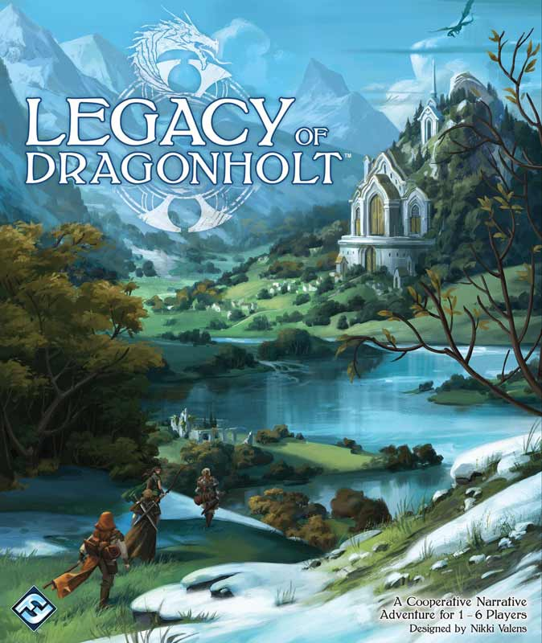
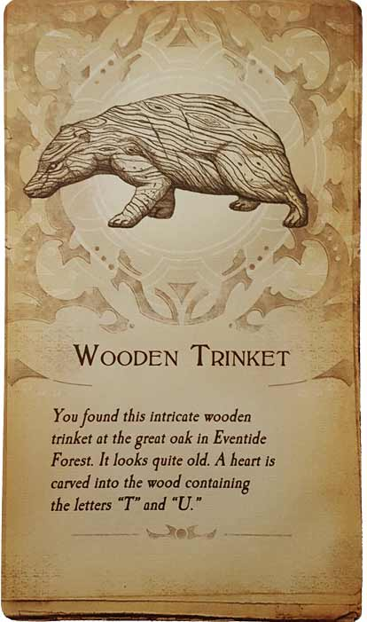
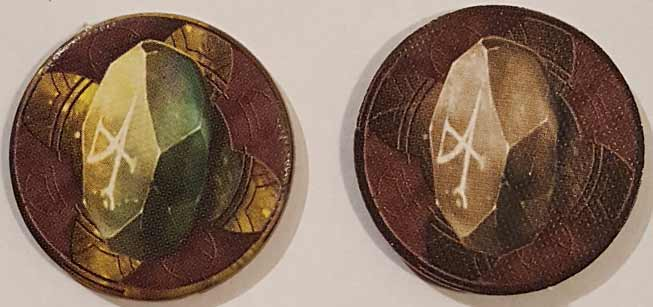
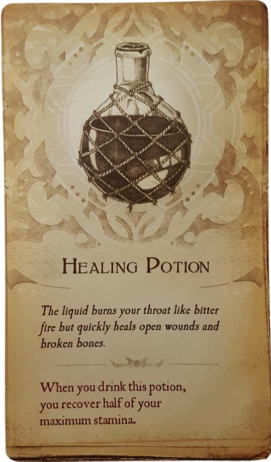

In this Legacy of Dragonholt review, D examines the full-game experience of this choose-your-own-adventure game from Fantasy Flight Games. Having played through the entire story by himself, D is now ready to tell you what he thinks of this RPG journey. In this game, players take on the roles of heroes as they travel to the village of Dragonholt in order to uncover an assassination plot, among other things. We all enjoyed the beginning stages of this adventure, but did it hold up through its conclusion? Continue reading below and D will tell you.

D reviews Legacy of Dragonholt
 (Author’s
note: this review is meant to accompany our gameplay video and will not
go in-depth on the game’s rules. If you’re interested in learning how
the game is played, please watch the video. It’s not bad.)
(Author’s
note: this review is meant to accompany our gameplay video and will not
go in-depth on the game’s rules. If you’re interested in learning how
the game is played, please watch the video. It’s not bad.)
Well, I didn’t lie. I said that I’d be continuing my adventures in Legacy of Dragonholt (one way or another), and I have. Sure, part of it was due to the lukewarm traction the videos had gotten, but mostly I wanted to try this game out by myself, without being forced to deal with the… eccentricities of my usual companions. So, instead of continuing with Ciaran where we had left off, I drew up an entirely new character and started over from the beginning again. And I am so glad that I did. I had given some impressions of Legacy of Dragonholt previously, which can be found here on the site, and many of the opinions I had then still hold true. But others have evolved, so consider this my official (spoiler-free) word on the matter.
The biggest criticism I’d levied against the game previously was that it didn’t provide much of an opportunity to roleplay. While it still falls far short of a traditional RPG in this area, I’d also say that roleplaying is more viable in Legacy of Dragonholt than I previously thought, at least if you’re playing alone. Granted, this is entirely up to the player, and powergaming and metagaming are totally viable options (hell, you could even cheat if you wanted to). But if you’ve got a good grasp on your character, then roleplaying is definitely an option. There were multiple times in my playthrough when I chose an option that I knew would probably not be optimal for the situation, but I did it anyway because it felt true to my character. And yes, sometimes this leads to some unpleasant consequences, but mostly it felt rewarding. Roleplaying is bound to be more difficult with multiple players – especially larger groups – since there’s so much reading involved, and the turn-taking mechanic is a bit awkward (albeit necessary). Overall though, I think it comes down to knowing your character and everyone being on the same page.
The writing, which I previously described as being solid but unremarkable, mostly kept up to that standard, but there were definitely highlights. Some of the action scenes were particularly evocative and exciting. A combat/chase scene involving minecarts in Sliver of Silver and Terror on the Prairie’s extended battle with a particularly dangerous beast immediately come to mind as times where I was not only entertained, but I actually felt a teensy bit like a badass. The writing also covers a lot of different genres and emotions. There are sections that are (or can be) surprisingly dark and intense, while others can be light, sweet, funny, and even spiritual. There’s a pair of weddings that the player(s) can attend, and you can even pursue a couple of romances yourself if you play your cards right. Most importantly, the writing never really gets bad. There are a couple of typos and some encounters that are duller than others, but that’s about as poor as it gets. Considering how much writing was involved and how much the writing had to account for, it’s all honestly quite impressive.
Now that I’ve completed it, I do have a couple of minor criticisms for Legacy of Dragonholt. For starters, there are some mechanics and choices that didn’t seem to have any impact. The Fame stat, for instance, had no discernible effect on the game as far as I can remember. I think I wound up with one more Fame than you start with, but I don’t remember an instance of it coming into play. Likewise, there’s a journal that you come into possession of with the instruction to read and study it in your free time. I did so, but at no point were any of my deductions necessary. A lot of it was either ignored or just came up during the plot without any input on my part. There’s also a choice at the start of the final adventure where you pick the mask you’re going to wear to a masquerade. I was expecting this to have some consequences, given how some of the masks are acquired, but nothing seemed to come from my decision. Granted, there’s a lot to do in this game and it’s possible I just missed the implementations of all of these things, but I bet that some things just got left on the cutting room floor.
Jumping between the village book and the adventure books can also be a confusing and sometimes inelegant procedure. Some of them are tied directly to the village book, making those easy, but the more side quest-y ones can create some confusion regarding how and when to tackle them and how doing them affects time in the village (the answer: it doesn’t). And the rules for when you can engage with the adventure books change on a case-by-case basis, so if something sounds time sensitive, you should probably treat it as such. I’m not going to knock the game too much for all this, as I suspect part of it was an attempt to create more realism and dynamism, but I will caution you to pay close attention, take vigorous notes, and use your intuition if you want the best possible experience.
One of the biggest surprises for me was how difficult Legacy of Dragonholt becomes. It’s not difficult in the sense that you’re likely to die – in fact it is almost impossible for your character to actually die – but rather in how crucial time management becomes and how stressful some of the choices become. The game provides ample opportunity for the players to get stronger, mainly by gaining new skills and items. A lot of this is accomplished by doing things around the village, but your time is limited and focusing on certain areas will definitely leave you weaker in others. And many of the decisions, particularly in relation to the main plot, are surprisingly intense – literal life-or-death stuff. There are four possible endings to the game, and you have to play the game pretty much perfectly in order to achieve the optimal one. Once I got there, I read all four of them, and boy is there some variance in the outcomes. Honestly, I caution parents who might be looking to play this with younger children. Most of the content in the game is pretty tame and a lot of the more adult stuff can be read around or reworded easily enough, but there are definitely moments that I think would be a bit too intense or disturbing for most children.
Despite my few quibbles, I absolutely loved my time with Legacy of Dragonholt. It’s one of my favorite tabletop experiences in recent years and an almost perfect compromise for someone like myself who is “always the DM, never the player.” Text-based, CYOA style games have been done before, but the opportunity to create your own character and shape the experience based on that is a wonderful innovation. Sadly, designer Nikki Valens left Fantasy Flight Games earlier this year, so a sequel is unlikely, but I hope that FFG is able to re-implement this system in other settings. If you’re craving an RPG but don’t have anyone to play with, go get this. It’s great.
D’s Rating: Five Stars out of Five.
Leave a Reply
You must be logged in to post a comment.